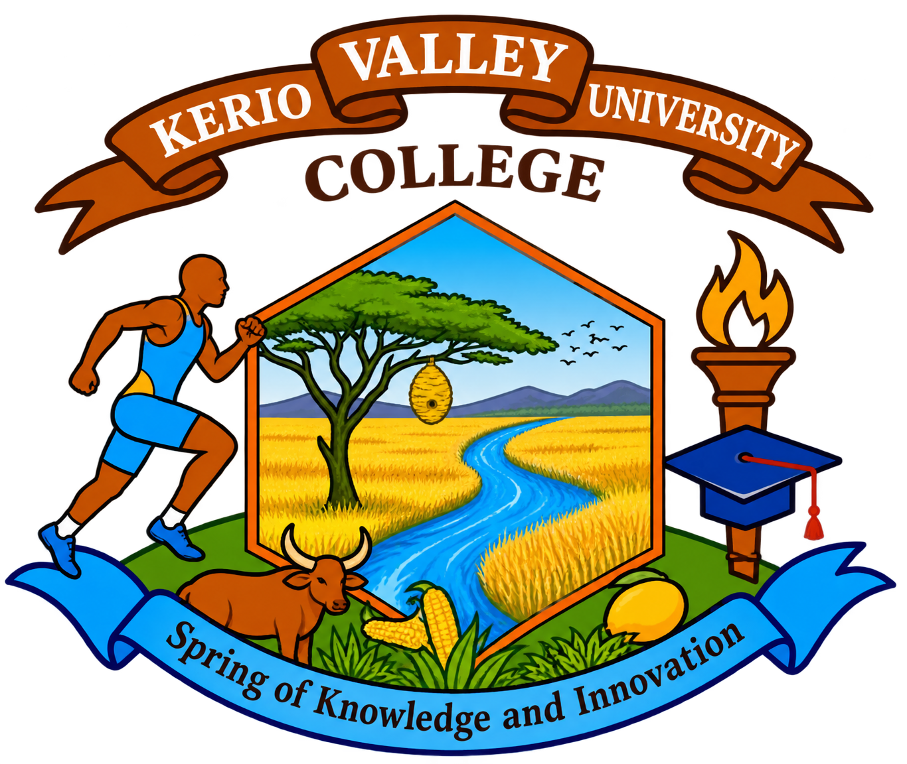

Telephone & email
Official telephone numbers and email addresses await verification.

KERIO VALLEYUNIVERSITY COLLEGEInstitutional contact channels have not yet been verified. No enquiries or personal information are collected by this prototype.
Official telephone numbers and email addresses await verification.
Postal details, campus addresses and map locations await verification.
Reception and departmental opening hours await verification.
A verified recipient and approved privacy notice are required before enabling an enquiry form.
This prototype does not send messages or collect visitor information. Confirm institutional contact channels before sharing personal documents.
Explore the legal notice and the supplied leadership announcement.